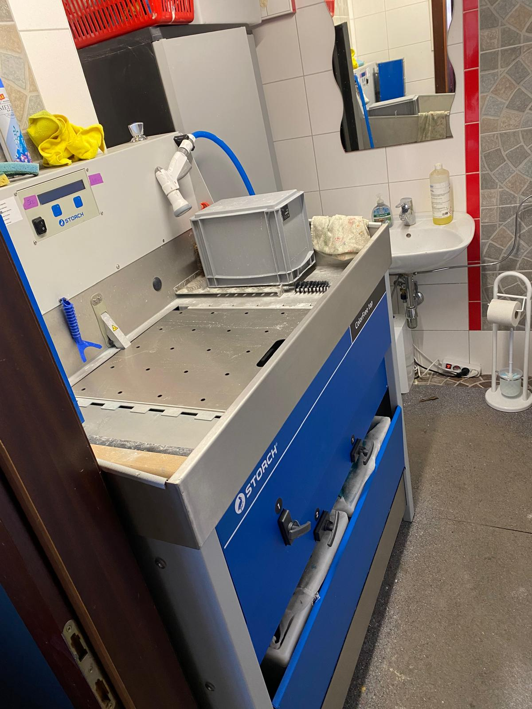

Nachhaltigkeit beim Malerbetrieb Prasch
Nachhaltiges Arbeiten bedeutet für uns: Materialien bewusst auswählen, sauber verarbeiten, Reste fachgerecht entsorgen und langlebige Beschichtungssysteme einsetzen.

Farbreste gehören nicht in den Hausmüll
Bei Malerarbeiten fallen Gebinde, Restmengen und Arbeitsmaterialien an. Wir achten darauf, diese Stoffe sauber zu trennen und fachgerecht zu entsorgen, damit Umwelt und Grundwasser geschützt bleiben.
Auch bei bei uns gekauften Farben unterstützen wir Sie nach Möglichkeit bei der richtigen Entsorgung von Resten und Gebinden. So endet ein Projekt nicht nur sauber an der Wand, sondern auch verantwortungsvoll im Umgang mit Materialien.
KEIM Mineralfarben für gesunde und langlebige Oberflächen
Wenn es zum Projekt passt, setzen wir auf mineralische Beschichtungssysteme von KEIM. Sie sind besonders langlebig, diffusionsoffen und eignen sich für wohngesunde Innenräume ebenso wie für robuste Fassadenlösungen.
Wohngesunde Innenräume
Mineralische Farben unterstützen ein angenehmes Raumklima, sind atmungsaktiv und passen gut zu sensiblen Wohnbereichen wie Schlaf- und Kinderzimmern.
Ökologische Farben von KEIM
KEIM Mineralfarben stehen für dauerhafte Farbstabilität, hohe Diffusionsfähigkeit und nachhaltige Beschichtungssysteme mit langer Lebensdauer.
Welche nachhaltige Lösung passt zu Ihrem Projekt?
Wir beraten Sie zu Materialwahl, Untergrund, Farbtyp und Entsorgung. So entsteht eine Lösung, die optisch passt, technisch funktioniert und verantwortungsvoll umgesetzt wird.